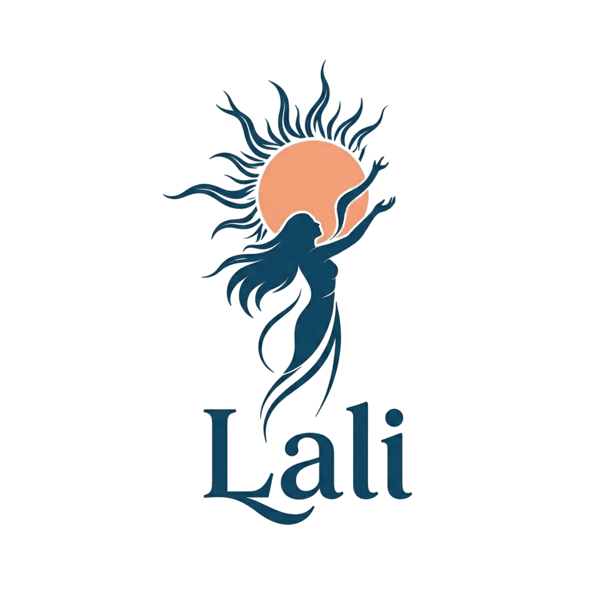
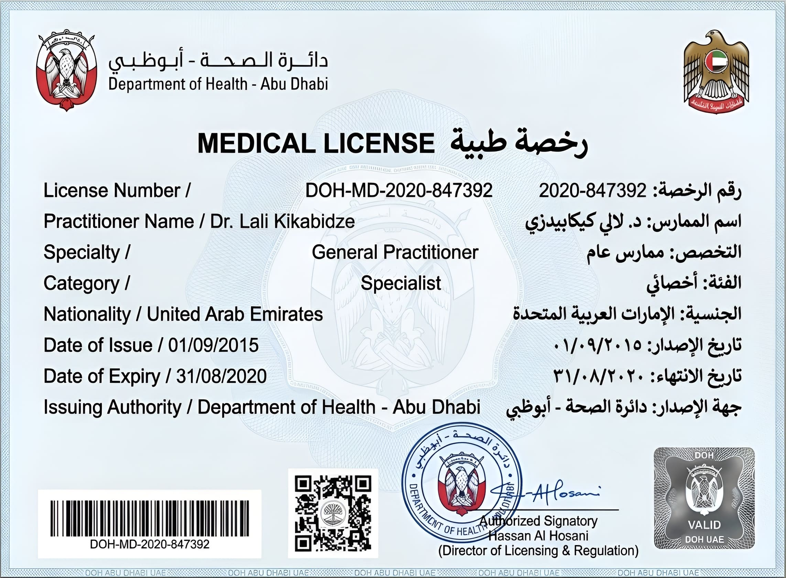
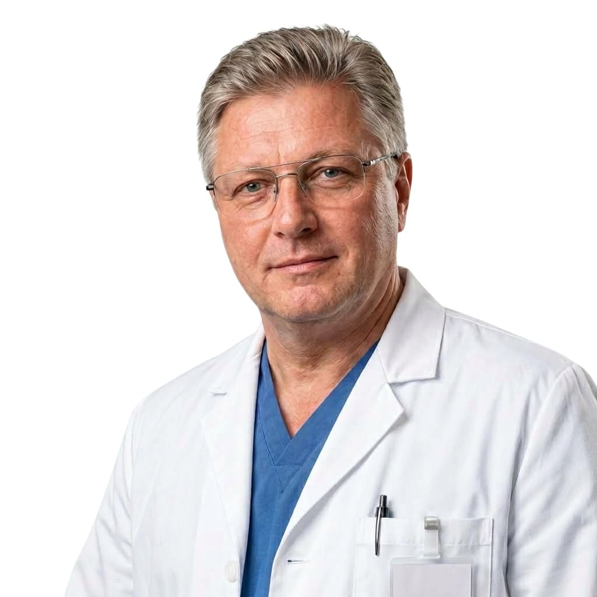
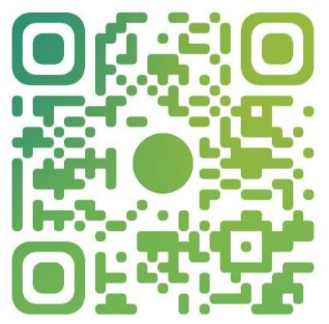

Остеопатическое сопровождение онкологических пациентов всех форм и стадий, включая IV. Авторские протоколы диагностики и восстановления, унаследованные и развитые внутри династии. Работа ведётся совместно с лечащим врачом и не заменяет назначенную терапию.
Четвёртое поколение остеопатической практики. Опыт, передаваемый из семьи в семью.
Университет Мохаммеда бин Заида (ОАЭ). Фундаментальное образование и современная научная база.
Авторские протоколы диагностики и восстановления с учётом особенностей каждого пациента.
Анализ медицинских данных, анализов и записей пациента до очной встречи.
Образование: ОАЭ, Университет Мохаммеда бин Заида. Полученное образование обеспечивает глубокую базу знаний в области медицины, современных методов диагностики и подходов к лечению.
Лицензия № DOH-MD-2020-847392 — Департамент здравоохранения Абу-Даби. Официальное право на осуществление медицинской деятельности в ОАЭ.
Dr. Lali Kikabidze · General Practitioner · Specialist

Сопровождение пациентов всех форм и стадий, включая IV: поддержка качества жизни, восстановления и переносимости терапии. Возможно во время и после основного лечения.
Остеопатическая поддержка в рамках комплексного маршрута, совместно с лечащим онкологом.
Поддержка нервной системы: работа с напряжением, сном и последствиями терапии.
Работа проводится комплексно и совместно с лечащим врачом. Остеопатический подход не заменяет назначенную терапию.
Остеопатическая поддержка развития, тонуса, осанки, сна и нервной системы.
Сопровождение в рамках комплексного маршрута ребёнка: поддержка тонуса, сна, питания и переносимости терапии, восстановление во время и после основного лечения. Только совместно с лечащим онкологом.
Поддержка развития и регуляции нервной системы: работа с тонусом, сном, режимом и сенсорной интеграцией, индивидуальный протокол с учётом маршрута каждого ребёнка.
Наблюдение и поддержка осанки, тонуса и развития; работа со сколиозом в рамках индивидуального протокола, согласованно с лечащим врачом.
Восстановление сна и отдыха по естественным ритмам организма; поддержка нервной системы в периоды стресса, терапии и восстановления.
Первое сообщение помощнику. Начать можно с короткого описания ситуации.
Сбор медицинских записей и анализов крови. Не нужно везти документы — достаточно фото и анализов.
Экспертный анализ предоставленных медицинских данных. Предварительная оценка подготавливает очную консультацию.
Приём и оценка в Краснодаре. Рекомендации формируются с учётом состояния и основного лечения.
«Благодарю за внимательное отношение и профессиональный подход.»
«Очень ценно, что учитывается весь медицинский путь и анализы. Спасибо!»
«Чувствуется опыт и забота. Большое спасибо за поддержку.»
Выбирая Lali, вы выбираете не просто врача, а целую систему профессионального опыта, знаний и заботы о каждом пациенте.
г. Краснодар, КП «Золотой город».
+7 (900) 353-53-53
Ваш первый контакт: ответит на вопросы, подскажет, с чего начать, и подберёт удобное время приёма. WhatsApp · Telegram.

НАВЕДИТЕ КАМЕРУ · ЛИЧНЫЙ TG СЕРГЕЯ